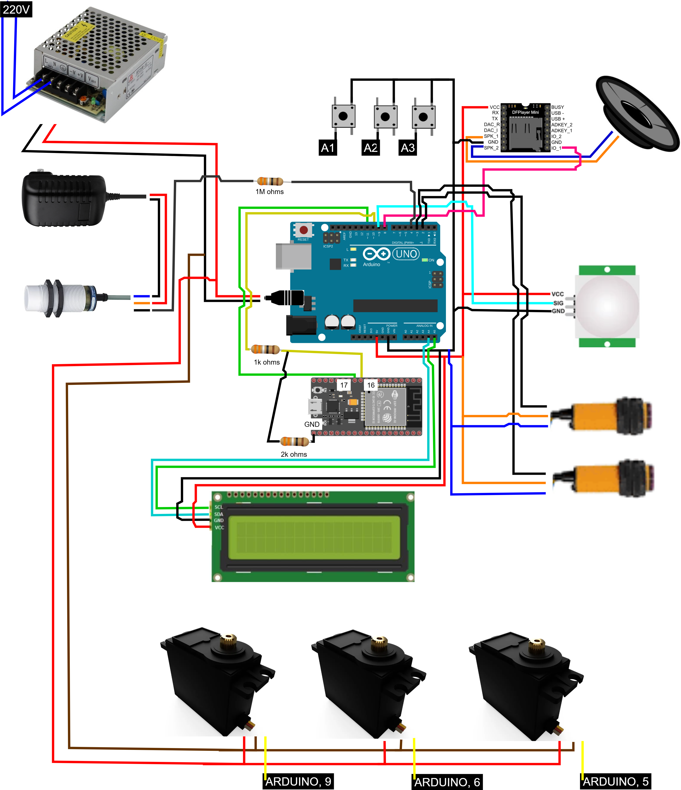

Step-by-step guide with wiring, code, 3D model, and parts list
Below is the wiring setup for your prototype. Make sure to double-check the connections to avoid short circuits or incorrect readings. Use jumper wires of proper length and secure them firmly on the breadboard and Arduino pins.
Follow this wiring diagram carefully:
Copy and upload this code into your Arduino:
#include#include LiquidCrystal_I2C lcd(0x27, 16, 2); void setup() { lcd.init(); lcd.backlight(); lcd.print("Hello, Client!"); } void loop() { // Your logic here }
You can rotate and zoom in on the 3D design below: